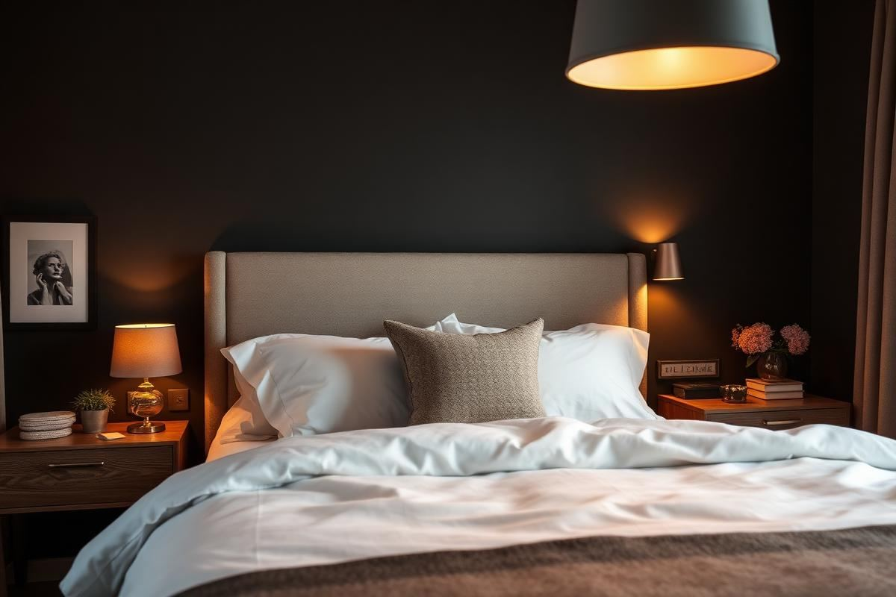
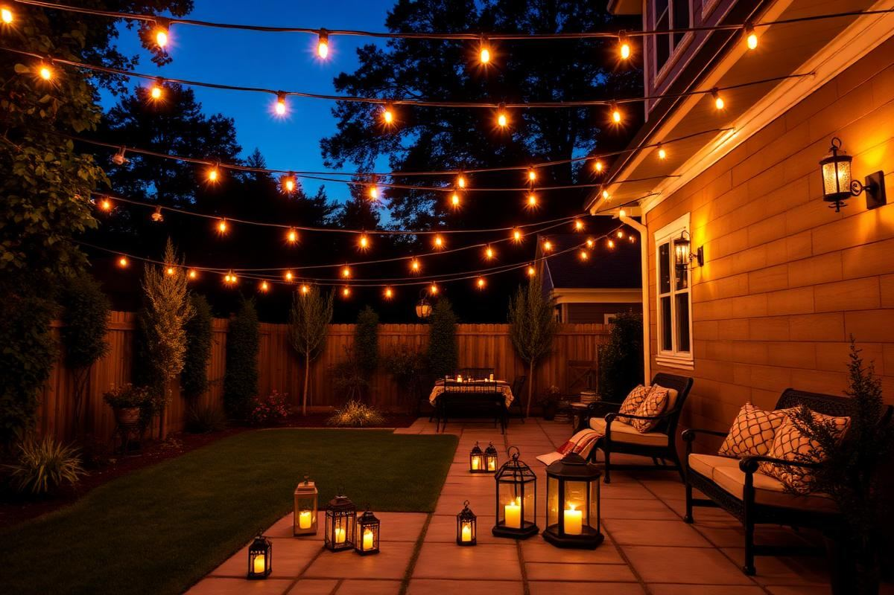

Living Room
Small Living Room Layout Ideas That Actually Work
The right layout can make a 12x12 living room feel generous. Here is the exact process a stylist uses to plan one, from focal point to rug size.
8 min read
Senior Home Decor Editor & Interior Stylist
8+ years in interior styling & home decor journalism
Sophia began her career as an assistant on residential styling shoots before moving into full-time editorial work. Since then, she has written and edited hundreds of long-form guides on furniture selection, layout, color, lighting, and seasonal decorating.
At Styleire, she leads a small editorial team that tests products in real homes, interviews working designers, and reviews every article for accuracy before publication. She personally fact-checks all claims about materials, care, and safety.
Sophia holds a certificate in interior styling from the KLC School of Design and continues to complete short courses on sustainable materials and lighting design.
The right layout can make a 12x12 living room feel generous. Here is the exact process a stylist uses to plan one, from focal point to rug size.

A good sofa lasts fifteen years. Here is how to make sure the one you buy is one of them.

A too-small rug is the most common decorating mistake. Here is how to size a rug for any living room layout.

Cozy is a feeling built from small, specific choices. Here are the twelve that make the biggest difference.

A small bedroom does not need to feel cramped. It needs a layout that respects the walking path and the light.

Thread count is mostly noise. Here is what actually determines how bedding feels.

Open shelving looks great in photos. In real kitchens, it is a lifestyle choice, not a style choice.

Every square inch of counter matters in a small kitchen. Here is how to add style without losing prep space.

A great dining room comes down to one fixture, hung correctly, with the right bulb.

A small balcony is not a wasted balcony. With three good choices, it becomes another room.

A styled patio uses the same rules as a good living room — with materials that survive the weather.

You don't need to paint to make wall art. Some of the best DIY pieces are almost entirely assembly.

Your first upcycle should be a small piece with good bones. Here is how to do it right the first time.

Great fall decor is a shift in temperature, not a shopping trip. Here is how to make the change with what you already own.

Warm neutrals are the safest and most flattering base for a whole-home palette. Here is how to build one on purpose.

Sustainable decor is not one label or one shop. It is a small number of decisions that compound.

Living Room Lighting Ideas: Layers That Feel Right — a clear, editor-tested guide covering the essentials without the filler.

How to Arrange Throw Pillows on a Sofa Without Overdoing It — a clear, editor-tested guide covering the essentials without the filler.

Living Room Color Schemes That Age Well — a clear, editor-tested guide covering the essentials without the filler.

Bedroom Lighting Guide: Warm, Layered, and Calm — a clear, editor-tested guide covering the essentials without the filler.

Master Bedroom Decor Ideas That Feel Like a Hotel — a clear, editor-tested guide covering the essentials without the filler.

Bedroom Color Ideas: Restful Palettes That Work — a clear, editor-tested guide covering the essentials without the filler.

How to Style a Bedside Table (5 Simple Rules) — a clear, editor-tested guide covering the essentials without the filler.

Guest Bedroom Essentials: What Actually Matters — a clear, editor-tested guide covering the essentials without the filler.

Kitchen Backsplash Ideas That Still Feel Fresh — a clear, editor-tested guide covering the essentials without the filler.

Kitchen Island Styling: What Belongs, What Doesn't — a clear, editor-tested guide covering the essentials without the filler.

Kitchen Color Schemes That Won't Feel Dated — a clear, editor-tested guide covering the essentials without the filler.

How to Organize Kitchen Counters (Without Losing Character) — a clear, editor-tested guide covering the essentials without the filler.

Farmhouse Kitchen Decor: The Modern Take — a clear, editor-tested guide covering the essentials without the filler.

Outdoor Lighting Ideas That Make a Yard Feel Finished — a clear, editor-tested guide covering the essentials without the filler.

Garden Decor Ideas That Age Beautifully — a clear, editor-tested guide covering the essentials without the filler.

Outdoor Dining Setup: A Simple Blueprint — a clear, editor-tested guide covering the essentials without the filler.

Front Porch Decorating Ideas for Every Season — a clear, editor-tested guide covering the essentials without the filler.

Backyard Privacy Ideas That Actually Look Nice — a clear, editor-tested guide covering the essentials without the filler.

Outdoor Rug Guide: Fibers, Sizes, and Care — a clear, editor-tested guide covering the essentials without the filler.

DIY Headboard Ideas: 6 Weekends, 6 Looks — a clear, editor-tested guide covering the essentials without the filler.

DIY Shelving Projects You Can Finish in a Day — a clear, editor-tested guide covering the essentials without the filler.

How to Paint Furniture So It Actually Lasts — a clear, editor-tested guide covering the essentials without the filler.
How to Plan a Gallery Wall (Without Regret) — a clear, editor-tested guide covering the essentials without the filler.

DIY Planter Ideas: Terracotta, Paint, and Patience — a clear, editor-tested guide covering the essentials without the filler.

DIY Coffee Table Ideas That Don't Wobble — a clear, editor-tested guide covering the essentials without the filler.

Winter Home Decor Guide: Warm Without the Kitsch — a clear, editor-tested guide covering the essentials without the filler.

Spring Home Refresh: 10 Small Changes — a clear, editor-tested guide covering the essentials without the filler.

Summer Home Decor Ideas That Feel Effortless — a clear, editor-tested guide covering the essentials without the filler.
Christmas Decorating Guide: Cozy, Not Cluttered — a clear, editor-tested guide covering the essentials without the filler.

Halloween Home Decor: The Elegant Approach — a clear, editor-tested guide covering the essentials without the filler.

Easter Decor Ideas That Aren't Twee — a clear, editor-tested guide covering the essentials without the filler.

Thanksgiving Table Setting: A Foolproof Formula — a clear, editor-tested guide covering the essentials without the filler.

A television does not have to dominate a room. Here are the mounting heights, wall treatments, and styling tricks I use to make a TV wall look like part of the design.

Coffee table styling is not decoration for its own sake — it is composition. Here is the formula, the measurements, and the everyday version that survives real life.

Storage is what separates a restful bedroom from a stressful one. Here is how to find cubic feet in a room that appears to have none.

Hotel beds look the way they do because of order and weight, not expensive linen. Here is the layering sequence, pillow maths, and the shortcut version.

Most kitchens have one bright ceiling light and a lot of shadow. Here is the three-layer approach, with the heights and lumen numbers that make it work.

A dining table needs two looks — one that survives homework and breakfast, and one that takes ten minutes before guests arrive. Here is how to build both.

Small outdoor spaces fail because the furniture is sized for a garden. Here are the dimensions, materials, and layouts that actually work outdoors in tight footprints.

Plants do more for a small outdoor space than furniture ever will — as long as they are grouped, sized, and repeated with some discipline.

A floating nightstand frees up floor space, fits beside the narrowest bed, and costs a fraction of a shop-bought version. Here is the full build, with real measurements.

You do not need a sewing machine to change every cushion in a room. Three no-sew methods, the fabric to buy, and how to get corners that actually look sharp.

January rooms feel flat once the decorations come down. This is the room-by-room reset I run every year to make a house feel calm, warm, and organised again.

Pink hearts and foil banners are not the only option. Here is how to mark Valentine's Day with a palette, some good candlelight, and flowers that last past the weekend.